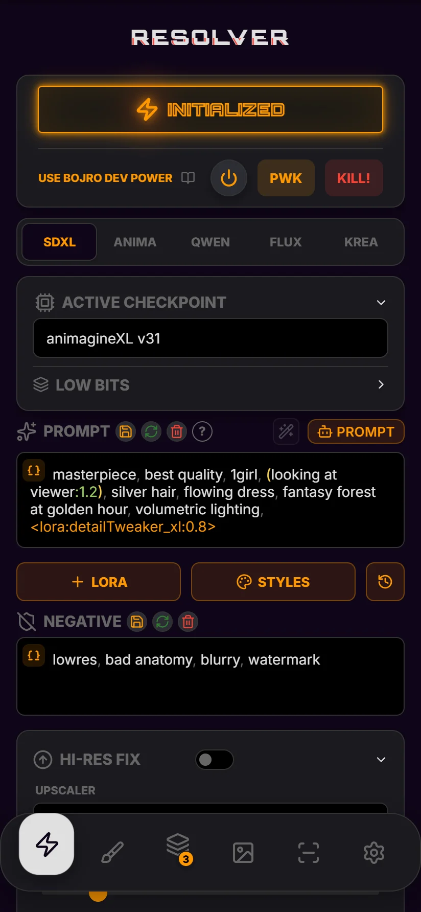
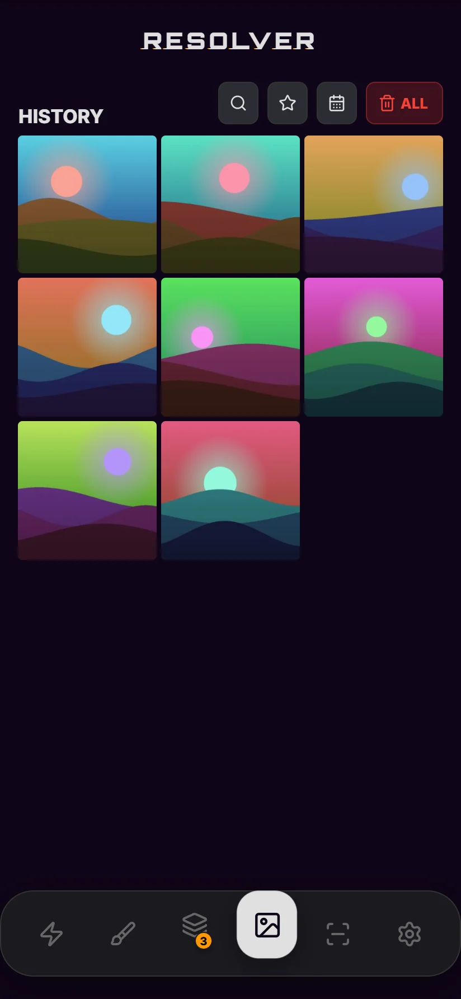
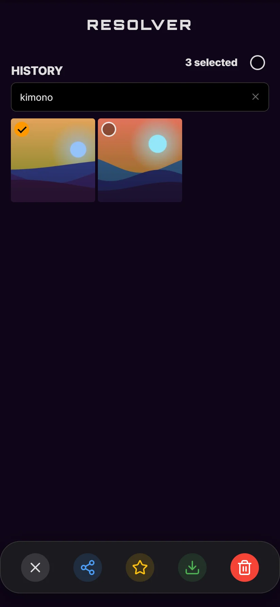
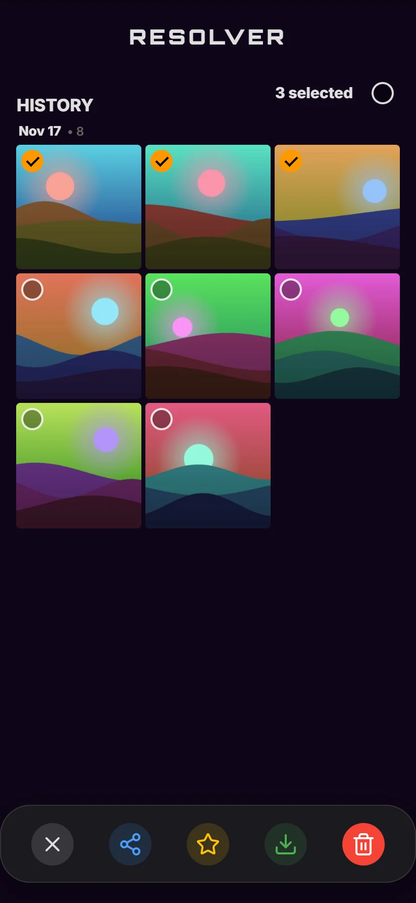
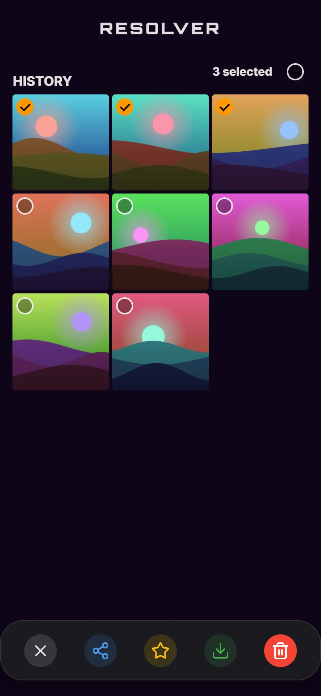
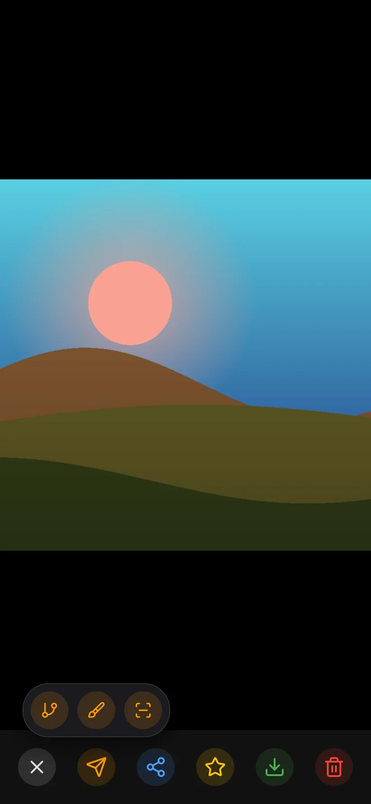
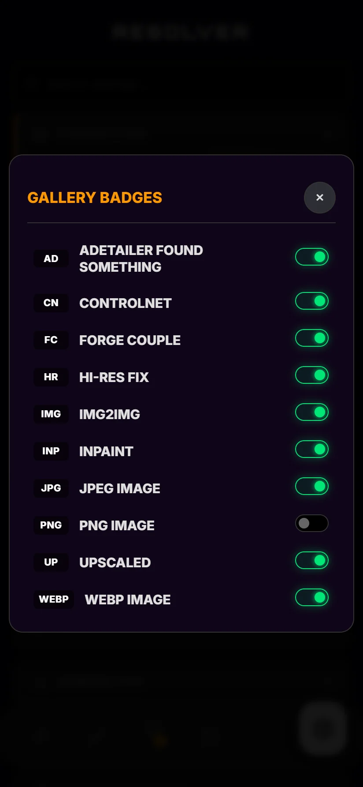

Docs / Review
History
Every image you generate lands in History, newest first, kept on your phone with its prompt and settings. From here you view, compare, share, save, favorite and reuse them.
Right after generating
New images appear first in the results strip under GENERATE (and on the Inpaint tab), then in History. The strip keeps the latest 20 (Config → History & Results → Recent results shown). Tap one to open the viewer.
Auto-Save (beside GENERATE) also saves each new image to the phone’s storage, in the format chosen there (PNG, JPEG or WEBP). See Generating.

The History tab
- Search
- Finds images by their prompt, checkpoint or date (“kimono”, “juggernaut”, “Nov 3”). More.
- Favorites
- Only your favorites, in one group.
- Date sections
- Headers between days (“Nov 3 • 4”). Hold the button to group by DAY, MONTH or YEAR.
- ALL
- Deletes all of History after asking. Favorites stay unless you tick Delete favorites too.
- Pages
- 30 images a page (History images per page), with ‹ › to turn pages.
- Columns
- AUTO, 3, 4 or 5 per row, and full width when the phone is sideways (Config → History & Results).

Search and date sections


Selecting several
- Hold a thumbnail to start selecting; then tap to tick more.
- Hold and slide to tick every image from there to your finger; slide back to untick.
- The circle at the top selects the whole page. Images already saved to the phone show SAVED.
- The bar at the bottom: share, ☆ favorite, save to the phone, delete, and to stop selecting (or press back).

The viewer
Tap any image to see it full screen. Swipe sideways for the next one, pinch to zoom.
- Send
- ControlNet (as its reference image, when ControlNet is on), Inpaint (opens Crop & Edit), Analyze (its prompt and settings), Wildcards (reroll its picks).
- Share
- Android’s share sheet.
- ☆ Favorite
- Stars it: kept when History is trimmed, and shown by the ★ filter.
- Download
- Saves it to the phone, named like
bojro_261117_1234567.png(the date as YYMMDD, then its seed).
- Delete
- Removes it from History.
- Hold
- On an Upscale, img2img or Inpaint result made this session: shows the original picture until you let go.

Badges
Small labels on the thumbnails say how an image was made. Choose which show in Config → History & Results → Gallery badges → MANAGE (all but PNG by default).
| Badge | Means |
|---|---|
| AD | ADetailer found something (or ran, without Progress Bridge) |
| CN | ControlNet |
| FC | Forge Couple |
| HR | Hi-Res Fix |
| IMG · INP | img2img · Inpaint |
| UP | Upscaled |
| PNG · JPG · WEBP | The file format |

How many images are kept
History lives on the phone, so it keeps the newest 30 images (Config → History & Results → Gallery cache limit, set it higher if you have room). When new ones push older ones out:
- Favorites are never removed. Star what you want to keep.
- With Auto-delete warning on (the default), before a job pushes out images you haven’t saved, the app shows them and asks: CANCEL or CONTINUE. Tap one to view it first.
- Images you saved (Auto-Save or Download) stay in the phone’s storage either way.
History Favorites can go in a backup, with the images. See Backup & Restore.